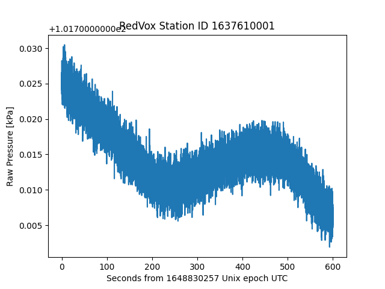
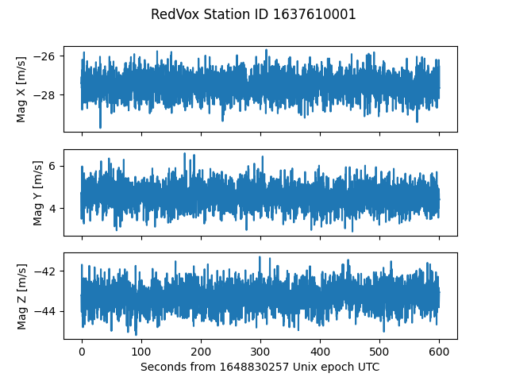

Load Other Sensor Data#
The DataWindow contains single-channel sensors, such as audio, and three-channel sensors, such as accelerometer. In this example we will take a look at the general procedure to obtain single-channel sensor data (barometer in this example), and three-channel sensor data, (magnetometer in this example).
For more Sensors available in the DataWindow, check out the Sensor documentation.
Running the example#
The first step is to load RedVox data in a DataWindow.
from redvox.common.data_window import DataWindow
# Input Directory
input_dir = "path/to/redvox/data/dw_1648830257000498_2.pkl.lz4"
# Load data window from report
dw = DataWindow.deserialize(input_dir)
Single-channel sensors such as the barometer sensor load the same way as the audio sensor.
from redvox.common.data_window import DataWindow
import matplotlib.pyplot as plt
# Input Directory
input_dir = "path/to/redvox/data/dw_1648830257000498_2.pkl.lz4"
# Load data window from report
dw = DataWindow.deserialize(input_dir)
for station in dw.stations():
# Single channel sensors such as barometer load the same way as audio
# Check that there is barometer data in the first place
if station.has_barometer_data():
# Get barometer data and timestamps (format to seconds)
barometer_samples = station.barometer_sensor().get_pressure_data()
barometer_time_micros = station.barometer_sensor().data_timestamps() - \
station.barometer_sensor().first_data_timestamp()
barometer_time_s = barometer_time_micros*1E-6
# Plot the barometer data
plt.figure()
plt.plot(barometer_time_s, barometer_samples)
plt.title(f"RedVox Station ID {station.id()}")
plt.xlabel(f"Seconds from {int(dw.start_date()*1E-6)} Unix epoch UTC")
plt.ylabel("Barometer Pressure [kPa]")
plt.show()
Three-channel sensors such as the magnetometer sensor load the same as the accelerometer sensor.
from redvox.common.data_window import DataWindow
import matplotlib.pyplot as plt
# Input Directory
input_dir = "path/to/redvox/data/dw_1648830257000498_2.pkl.lz4"
# Load data window from report
dw = DataWindow.deserialize(input_dir)
for station in dw.stations():
# Multi-channel sensors such as magnetometer load the same as the accelerometer sensor
# Check that there is magnetometer data in the first place
if station.has_magnetometer_data():
# Magnetometer has 3 channels - x, y and z
magnetometer_x_samples = station.magnetometer_sensor().get_magnetometer_x_data()
magnetometer_y_samples = station.magnetometer_sensor().get_magnetometer_y_data()
magnetometer_z_samples = station.magnetometer_sensor().get_magnetometer_z_data()
# The channels share the same timestamps
magnetometer_time_micros = station.magnetometer_sensor().data_timestamps() - \
station.magnetometer_sensor().first_data_timestamp()
magnetometer_time_s = magnetometer_time_micros*1E-6
# Plot the acceleration data - one subplot per channel
fig, ax = plt.subplots(nrows=3, ncols=1, sharex='col')
ax[0].plot(magnetometer_time_s, magnetometer_x_samples)
ax[1].plot(magnetometer_time_s, magnetometer_y_samples)
ax[2].plot(magnetometer_time_s, magnetometer_z_samples)
# Set labels and subplot title
ax[0].set_ylabel('Mag X [m/s]')
ax[1].set_ylabel('Mag Y [m/s]')
ax[2].set_ylabel('Mag Z [m/s]')
ax[2].set_xlabel(f"Seconds from {int(dw.start_date()*1E-6)} Unix epoch UTC")
plt.suptitle(f"RedVox Station ID {station.id()}")
plt.show()
Example output#
After running the above code snippets, you should see this graph for the barometer:

and this one for the magnetometer:

For a more complete example on how to load sensor data, visit Github.
For more information on Sensors, visit the Sensor Data Documentation and the Sensor Subclasses to see what X, Y, Z data and other possible functions are available per sensor.
The next example focuses on obtaining Metadata and state of health data.